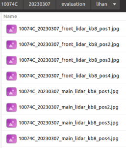
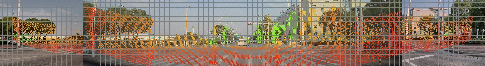
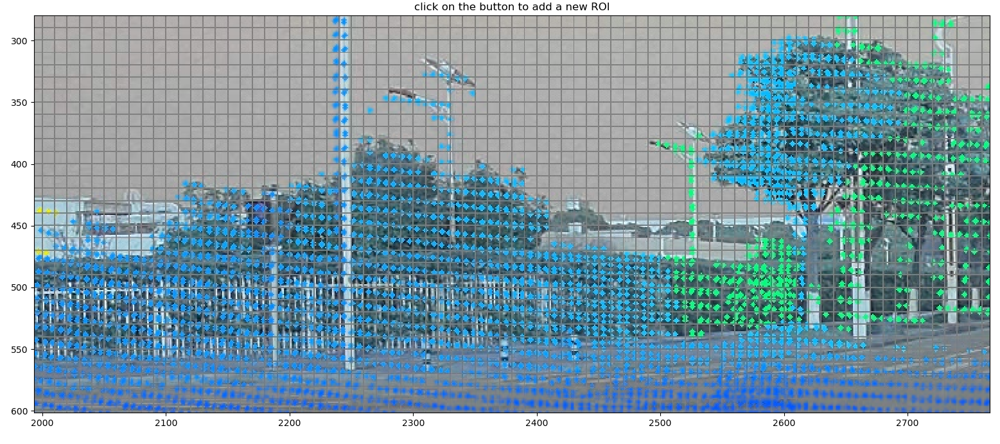
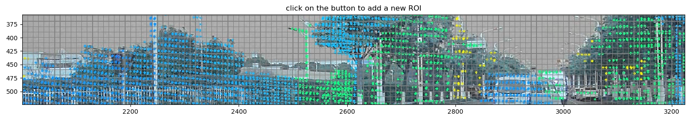
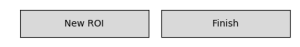
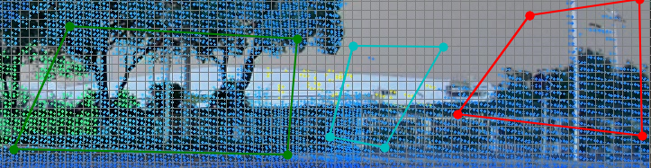
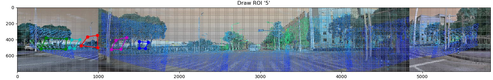

Projection results check tool v1.0
Parameter Description
'-v', '--vehicle', the information of vehicle
'-d', '--date', the date of calibration
'-p', '–position', the position of evaluation
'-l', '--lidar', the name of lidar
'-c', '--camera', the model of front-wide-camera
'-n', '--name', the name of checker
Precautions
Need to install $ PIP Install Roipoly
Merge_evaluation.py script needs to be placed in the same level of the frame number to ensure that 10074C/20230307/Evaluation/POS1/Project folder exists
1. Generate a folder named after the inspector 9940_20230227/10074C/20230307/Evaluation/Lihan, and save the test results 10074c_20230307_lidar_kb8_posx.jpg and 10074c_202307main_lid ar_kb8_posx.jpg

$ python3 merge_evaluation.py -v 10074C -d 20230307 -p pos1 -l front_lidar -c kb8 -n lihan
The FRONT-Left-Camera, Front-Wide-Camera, and Front-Right-Camera key areas

$ python3 merge_evaluation.py -v 10074C -d 20230307 -p pos1 -l main_lidar -c kb8 -n lihan
The above-mentioned FRONT-Left-Camera, Front-Wide-Camera, Front-Right-Camera key areas
The following shows the key areas of Rear-Right-Camera, Rear-Camera and Rear-Left-Camera

2. Support translation, zoom, local viewing, frame selection "problem area" and save
Click the fifth icon and hold the left mouse button box to select the rectangular area. You can view the details step by step


Click the fourth icon, move the right button of the mouse, you can zoom in the local details. After holding down the left mouse button, you can move to view the surrounding details

Strike the first icon, you can return to the initial state

Click the New ROI box to select the problem area (the left button selects the polygon vertex, right -click automatically closed)

After all the inspection is completed, click the 7th icon to save
